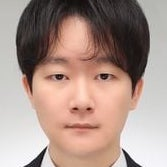
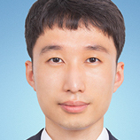

특별세션
초청강연
-
원치선 교수
동국대학교
심층 신경망 기반 Audio-Visual 신호 처리
일반적으로 비디오는 영상 정보뿐만이 아니라 오디오 정보를 동반한다. 따라서 오디오와 비디오 정보를 서로 보완적으로 활용함으로써 Audio-Visual 신호 처리 문제의 성능을 향상시킬 수 있다. 예를 들어, 오디오 신호의 분리를 위해 비디오 정보를 활용할 수 있고, 비디오 정보만을 사용한 동작인식에 비디오와 동반된 오디오 정보를 활용하여 인식성능을 향상시킬 수 있다. 본 강연에서는 심층 신경망 기반 Audio-Visual 신호 처리 연구의 동향과 최근의 응용 사례를 소개한다.
-
한재준 마스터
삼성전자 종합기술원
Foundation Model in Industrial Computer Vision Applications
chatGPT 등의 거대 언어 모델이 등장하면서, 다양한 Benchmark에서 인간 수준을 뛰어 넘는 성능을 보여 주고 있으며, 이러한 언어 모델을 접목한 다양한 서비스가 개발되고 있다. Computer Vision 분야에서도 Foundation Model 및 Diffusion Model과 같은 Generative Model 들이 등장하며 언어 기반 영상 생성 등 다양한 응용이 제시되고 있다. 특히 거대 언어 모델은 Chain of Thoughts와 같은 논리적 추론 능력 언어모델을 학습하면서 발생하게 된다. 이러한 거대 언어 모델에서 발현되는 지능과 Computer Vision 기술 측면에서 언어 모델이 가지는 의미와 활용에 대하여 논의하고자 한다.
-
윤형진 기술고문
인피니언 코리아
Practitioner’s View on Signal Processing and Machine Learning Approach
인공지능을 응용한 서비스와 제품은 갑자기 우리 생활 곳곳에서 그 모습을 드러내고 있고, 많은 사람들이 여기에 자극을 받아 현업에 인공지능을 활용할 수 있는 방안을 모색하고 있다. 고전적인 신호처리에 의해 충실하게 그 역할을 수행하던 것들도 이러한 흐름에 따라 인공지능으로 대체하려는 시도가 활발하지만 그 목적과 효과에 대해서는 눈을 닫는 경우도 볼 수 있다. 문자 그대로 인공지능은 사람이 정해준 목표를 충실하게 이행하는 것이므로, 인공지능의 적용 범위와 그 성능 목표치를 정하고, 그것을 어떻게 평가하고 달성할 것인가를 정하는 것은 사람의 몫이다. 또한 문제를 식별하고 분석하는 과정에서 고전적인 신호처리는 여전히 사람에게 직관과 통찰을 제공하는 훌륭한 도구이다. 본 강연에서는 실무 사례를 중심으로 신호처리와 인공지능의 조화를 통해 더욱 효과적으로 현업에 적용하기 위한 방안을 함께 모색하고자 한다.
튜토리얼
-
김승룡 교수
고려대학교
Towards View-Consistent Text-to-3D Generation
Text를 입력으로 받아 3차원 모델을 만드는 기술은 최근에 Diffusion Model과 Neural Radiance Fields (NeRF)의 성공에 힘입어 실제적인 적용이 가능한 수준의 결과들이 공개되고 있다. 하지만 이러한 기존의 기술은 2차원 Diffusion Model에만 의존하다보니 생성된 3차원 모델이 View-inconsistent 한 결과를 자주 보여준다. 본 세미나에서는 이러한 View-inconsistency 문제를 해결하기 위한 연구들을 소개하고 향후 방향성에 대해서 논의해보고자 한다.
-
임성훈 교수
DGIST
Recent Advances in Vision Foundation Models
Visual understanding, such as image classification or object detection, is one of the long-standing challenges in computer vision. Until now, most research has been conducted using models specialized for each problem, and this approach had limitations in fully harnessing potential synergies between various tasks. However, recently, based on the success of large-scale visual-language pre-training, there has been increasing interest in the 'Vision foundation' model that can be applied to various tasks ranging from the image level to the pixel level. In this tutorial, I aim to introduce the latest research trends and learning methods for such 'Vision foundation' models.
우수 신진연구자 수상자
-
조성인 교수
동국대학교
최신 도메인 적응 기법의 이해
본 강연에서는 소스 도메인에서의 풍부한 레이블 정보를 기반으로, 레이블 정보가 존재하지 않거나, 충분하지 않은 목표 도메인에서의 우수한 성능을 제공하기 위한 모델 훈련 기법인 도메인 적응 기법을 소개한다. 구체적으로, 목표 도메인의 일부 레이블 정보의 활용 가용 여부에 따라서, 도메인 적응 기법을 비지도 도메인 적응 기법과 준지도 도메인 적응 기법으로 분류하여 설명한다.
신진연구자 세션
-

이석주 교수
한국에너지공과대학교
사전지식을 활용한 자율주행 시각 인지 기법
자율주행 기술은 시각적 인지 능력에 의존한다. 이러한 시각 인지는 목적에 따라 크게 의미론적 인지와 기하학적 인지로 분류된다. 이때, 각각의 태스크를 처리하는 신경망들은 특정한 하나의 작업을 수행하는 데 유용하지만, 이들의 추론 정보들을 서로 유기적으로 활용한다면 더 높은 강인성을 확보할 수 있다. 본 강연에서는 서로 다른 태스크에서 생성된 정보를 사전지식으로 학습에 활용하여 본 태스크의 인식 성능을 개선하는 기법들을 소개한다.
-
김한울 교수
서울과학기술대학교
Monocular 3D Pose and Shape Reconstrcution with Bi-Contextual Attention Module and Attention-Guided Modeling
카메라 센서로 취득한 영상에서 주변 객체의 3차원 포즈와 형태를 인지하는 것은 자율 주행에 있어 필수적인 기술로, 최근 컴퓨터 비전 분야에서 활발히 연구가 진행되고 있다. 본 강연에서는 3차원 포즈와 형태 추정의 기본 개념을 소개하고, 주행 환경에서 고려할 수 있는 문맥 정보에 대해 논의한다. 또한 이러한 시맨틱 정보를 활용하여 3차원 포즈 추정의 성능을 개선할 수 있도록 설계된 Bi-Contextual Attention 기법과 형태 추정을 위한 Attention-Guided Modeling 기법을 살펴본다.
-
이종택 교수
경북대학교
Augmenting Vision-based Passenger Weight Prediction via Viscoelastic Mat
항공 여행 시, 항공사는 승객의 체중을 측정하기 어렵기 때문에 불필요하게 많은 연료를 싫게 되어 연료 효율이 나빠진다. 일반적인 체중 측정 방법은 붐비는 공항에서 실용적이지 않기에, 본 강연에서는 새로운 비전 기반의 체중 추론 시스템을 소개한다. 이 시스템은 승객이 걸어가는 동안 매트의 변형 형상을 인식하여 체중을 추정하는 방식으로, 추가적인 측정 시간 없이 개인의 체중을 정확하게 추정할 수 있다.
-

박진선 교수
부산대학교
환경 변화에 강인한 멀티모달 센서 융합 기반의 3D Vision
최근 자율주행 자동차 등의 다양한 실세계 플랫폼이 상용화되었다. 이러한 플랫폼에서는 외부 환경 변화에 강인한 인식 기술이 필요하다. 이를 위해 환경 변화에 따른 다양한 센서의 특성이 다르므로, 멀티 모달 센서 정보를 융합하여 환경 변화에 강인한 시각적 인식을 목표로 하고자 하며, 이와 관련된 멀티 모달 센서 융합 기반의 3차원 정보(Depth) 추정 기법을 소개한다.
-
손진희 교수
GIST
Zero-shot Referring Image Segmentation with Global-local Context Features
In this talk, I will introduce a new method to find segmentation masks described by text expressions in images using zero-shot transfer of CLIP (Contrastive Language-Image Pretraining). This method utilizes the image and text encoding capabilities of CLIP to capture local and global context for both modalities and identify the target mask in unseen datasets without the need for any additional training. The proposed method surpasses not only various baselines but also the performance of an existing weakly supervised method, and it also outperforms existing supervised models in few-shot scenarios.
-
이수목 교수
아주대학교
자율주행 3D 객체 인식의 기술적 이슈 및 응용
최근 이미지를 이용한 딥러닝 기법을 통해 높은 물체 인식률의 달성이 가능해졌다. 하지만, 자율주행의 안정적인 인식을 위해서는, 아직 많은 완전자율주행 운영팀이 비교적 거리정확도가 확실한 3D Point cloud 데이터 기반의 주행에 의존하는 경향이 있다. 3D point cloud 데이터 기반의 물체검출 및 학습 알고리즘이 필요한 상황에서 데이터의 특성들이 기존 딥러닝과는 다르기 때문에 생기는 기술적인 이슈에 대해서 논의한다. 본 강연에서는 최대한 3D 정보를 손실하지 않으면서 기존 딥러닝 네트워크를 이용하는 부분에 대한 소개와 응용 방법에 대해서 소개한다.